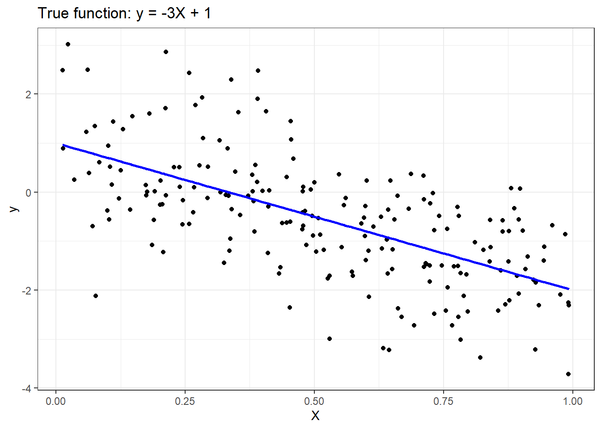
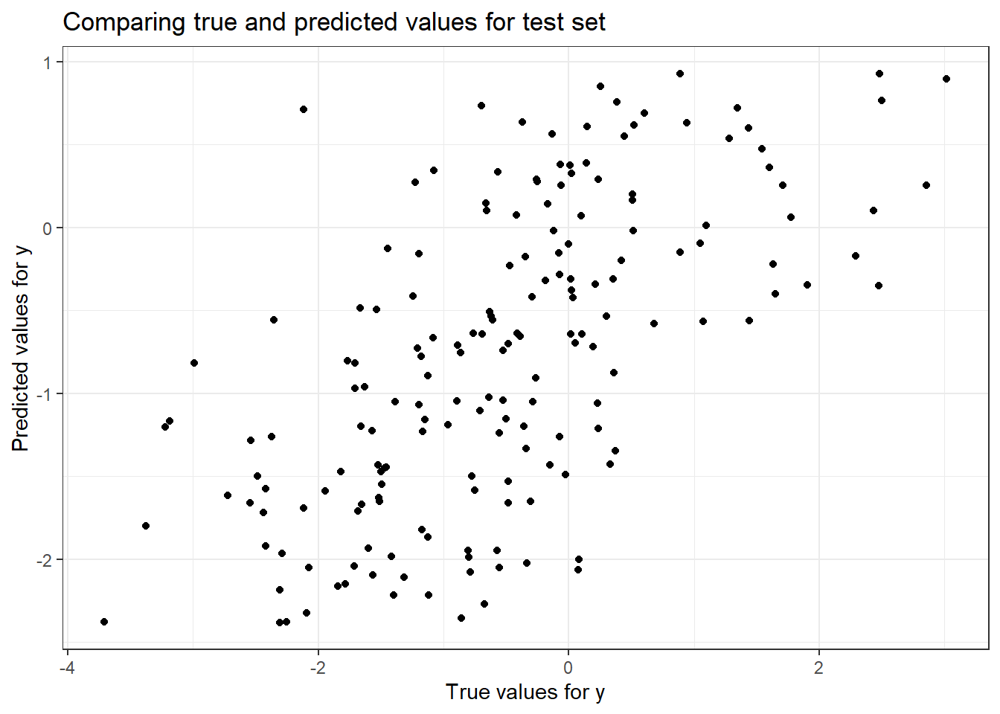

#################################### Generate Synthetic Attributes#################################### parametersseed <-1# seed for random number generation numInstances <-200# number of data instances# Set seedset.seed(seed)# Generate dataX <-matrix(runif(numInstances), ncol=1)y_true <--3*X +1y <- y_true +matrix(rnorm(numInstances), ncol=1)# Plotggplot() +geom_point(aes(x=X, y=y), color="black") +geom_line(aes(x=X, y=y_true), color="blue", linewidth=1) +ggtitle('True function: y = -3X + 1') +xlab('X') +ylab('y')

######################################################## Step 1: Split Input Data into Training and Test Sets######################################################## Train/test splitnumTrain <-20# number of training instancesnumTest <- numInstances - numTrain #180set.seed(123) # For reproducibilitydata <-tibble(X = X, y = y)split_obj <-initial_split(data, prop = numTrain/numInstances) #Randomly split 10% of data# Extract train and test datatrain_data <-training(split_obj) #20 attribute & response valuestest_data <-testing(split_obj) #180 attribute & response values# Extract X_train, X_test, y_train, y_testX_train <- train_data$Xy_train <- train_data$yX_test <- test_data$Xy_test <- test_data$y
####################################################### Step 2: Fit/Create Regression Model to Training Set####################################################### Create a linear regression model specificationlin_reg_spec <-linear_reg() |># This just contains info that says "lm".set_engine("lm")# Fit the model to the training datalin_reg_fit <- lin_reg_spec |>fit(y ~ X, data = train_data) # This is the linear function of our training data
################################################# Step 3: Apply Model to the Test Set################################################# Apply model to the test sety_pred_test <-predict(lin_reg_fit, new_data = test_data) |>pull(.pred)# We're brining in the test data into our Trained Linear Function.
############################################################ Step 4: Evaluate Model Performance on Test Set (Visually)############################################################ Plotting true vs predicted valuesggplot() +geom_point(aes(x =as.vector(y_test), y = y_pred_test), color ='black') +ggtitle('Comparing true and predicted values for test set') +xlab('True values for y') +ylab('Predicted values for y')

###################### Step 4 (CONT'D)###################### Prepare data for yardstick evaluation, "truth estimates"eval_data <-tibble(truth =as.vector(y_test),estimate = y_pred_test)truth <-as.vector(y_test)estimate <- y_pred_test# Model evaluationrmse_value <-rmse(data = eval_data, truth = truth, estimate = estimate)r2_value <-rsq(eval_data, truth = truth, estimate = estimate)cat("Root mean squared error =", sprintf("%.4f", rmse_value$.estimate), "\n")
# A tibble: 5 × 7
Model Train_error Test_error Sum_of_Absolute_Weig…¹ `Train error` `Test error`
<chr> <dbl> <dbl> <dbl> <chr> <chr>
1 -0.5… 1.33 1.30 3.64 <NA> <NA>
2 0.34… 1.26 1.35 62.8 <NA> <NA>
3 0.07… 1.18 1.49 137. <NA> <NA>
4 -1.8… 1.17 1.53 178. <NA> <NA>
5 Ridg… NA NA NA 1.3309131350… 1.295979736…
# ℹ abbreviated name: ¹Sum_of_Absolute_Weights
# ℹ 1 more variable: `Sum of Absolute Weights` <chr>
set.seed(1234)# Ensure y_train is a vectory_train <-as.vector(y_train)# Combine training datatrain_data <-tibble(y = y_train, X1 = X_train5[,1], X2 = X_train5[,2], X3 = X_train5[,3], X4 = X_train5[,4], X5 = X_train5[,5])# Define reciperecipe_obj_lasso <-recipe(y ~ ., data = train_data) %>%step_normalize(all_predictors()) |>prep()# Define the lasso specificationlasso_spec <-linear_reg(penalty =tune(), mixture =1) %>%set_engine("glmnet")# Lasso workflowlasso_wf <-workflow() |>add_recipe(recipe_obj_lasso)# Lasso fitlasso_fit <- lasso_wf |>add_model(lasso_spec) |>fit(data = train_data)# Grid of alphas for Lassolambda_grid <-grid_regular(penalty(), levels =50)# Tunetune_results_lasso <-tune_grid(lasso_wf |>add_model(lasso_spec),resamples =bootstraps(train_data, times =5),grid = lambda_grid)
→ A | warning: A correlation computation is required, but `estimate` is constant and has 0 standard deviation, resulting in a divide by 0 error. `NA` will be returned.
There were issues with some computations A: x1
There were issues with some computations A: x3
There were issues with some computations A: x5
# Extract best parameters for Lassobest_params_lasso <- tune_results_lasso %>%select_best("rmse")# Refit the model using Lassolasso_fit <- lasso_spec %>%finalize_model(best_params_lasso) %>%fit(y ~ ., data = train_data)# Extract coefficientslasso_coefs <- lasso_fit$fit$beta[,1]# Predictions using Lassoy_pred_train_lasso <-predict(lasso_fit, new_data = train_data)$.predy_pred_test_lasso <-predict(lasso_fit, new_data =tibble(X1 = X_test5[,1], X2 = X_test5[,2], X3 = X_test5[,3], X4 = X_test5[,4], X5 = X_test5[,5]))$.pred# Create the model string for Lassomodel7 <-sprintf("%.2f X + %.2f X2 + %.2f X3 + %.2f X4 + %.2f X5 + %.2f", lasso_coefs[2], lasso_coefs[3], lasso_coefs[4], lasso_coefs[5], lasso_coefs[6], lasso_fit$fit$a0[1])values7 <-c(model7, sqrt(mean((y_train - y_pred_train_lasso)^2)),sqrt(mean((y_test - y_pred_test_lasso)^2)),sum(abs(lasso_coefs[-1])) +abs(lasso_fit$fit$a0[1]))# Make the results tibble for Lassolasso_results <-tibble(Model ="LassoCV",`Train error`= values7[2], `Test error`= values7[3], `Sum of Absolute Weights`= values7[4])cat("Selected alpha for Lasso =", best_params_lasso$penalty, "\n")
Selected alpha for Lasso = 0.6250552
lasso_results
# A tibble: 1 × 4
Model `Train error` `Test error` `Sum of Absolute Weights`
<chr> <chr> <chr> <chr>
1 LassoCV 1.34525910987747 1.28985807470116 0.750560758224512